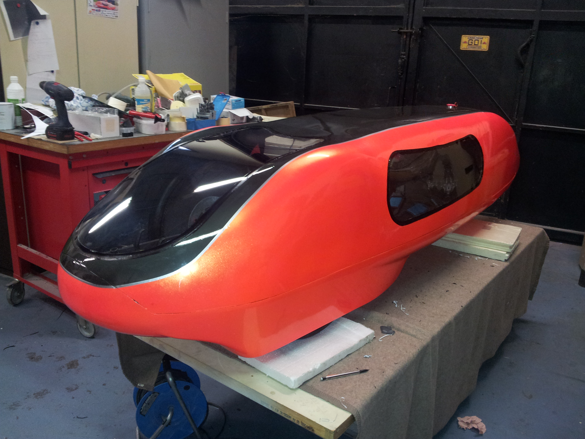

La génèse :
Ce véhicule est une évolution du modèle Augustine III. Sa coque a été élaborée à partir des moules d'Augustine III avec quelques modifications apportées au niveau des passages des roues de la coque inférieure.
Par contre elle a bénéficié des compétences acquises durant la réalisation d'Augustine III. Les éléments structureaux internes sont donc optimisés en terme de structure et de mise en oeuvre. Ce véhicule bénéficie donc d'une meilleure rigidité tout en ayant une masse inférieure à son aînée.

Principales caractéristiques techniques :
- 1ère participation au Shell Eco-Marathon : 2016 - Eco-Maraton de Londres
- Masse à vide : 31 kg
- Longueur :
- Largeur :
- Empatement :
- Voie avant :